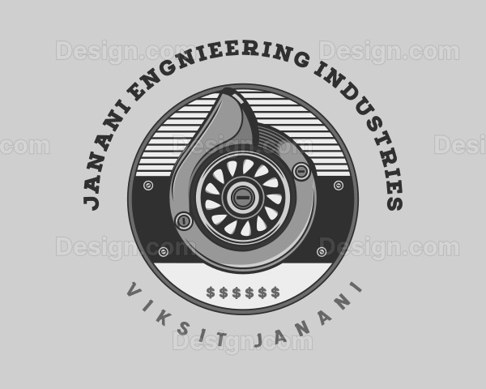

Janani Engineering Industries
Trusted Engineering Solutions for the Sugar Industry
Home
About
Services
Supplies
Projects
Gallery
Contact
Our Services
Mill Hydraulic Head Reconditioning By Modified Teflon Ceiling
Mill Headstock Pin Hole Reboring
Field Machining and Drilling
Hydraulic head ID grading finish
Sugar mill headstock pinholes re boring work at sugar mill site using portable boring machine
Sugar mill crown pinion reconditioning work bore area
Sugarmill roller journal shaft reconditioning